Document Management
Project Overview
Designed and deployed a cloud-native microservices architecture using Kubernetes on AWS. This setup simulates a real-world web application stack, showcasing integration between various backend services and persistent storage. The architecture ensures scalability, resilience, and secure access to resources, following best practices in cloud-native deployments.
Features
-
Ingress resource configured for HTTP routing to internal services.
-
Kubernetes Services used to expose RabbitMQ, Memcached, and MySQL.
-
Secure communication using Kubernetes Secrets for sensitive data.
-
Real-time communication between components using services like RabbitMQ and Memcached.
-
Each document has its own discussion to help employees comment
and communicate with each other.
-
Persistent storage via EBS volumes using dynamic provisioning with StorageClass and PVC.
-
Additionally, the architecture suited for cloud-native applications.
Technologies
- AWS Cloud
- Kubernetes
- Docker Compose
- EBS Volumes
- NGINX Ingress
- Kubernetes Secrets
 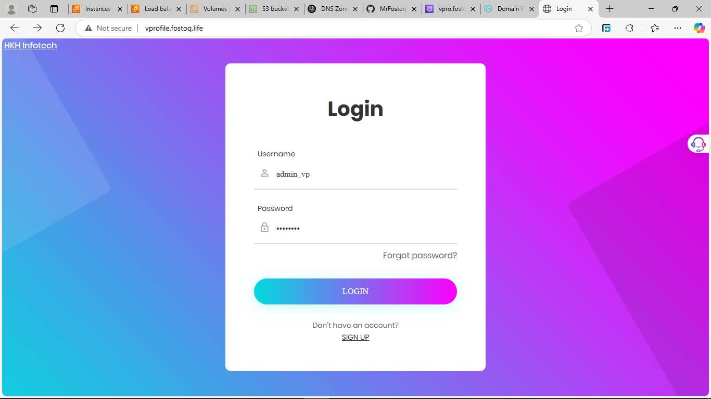
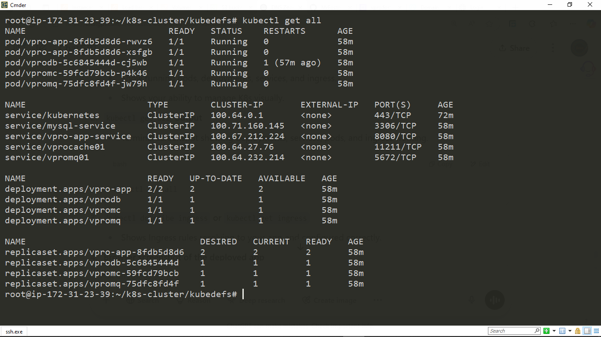
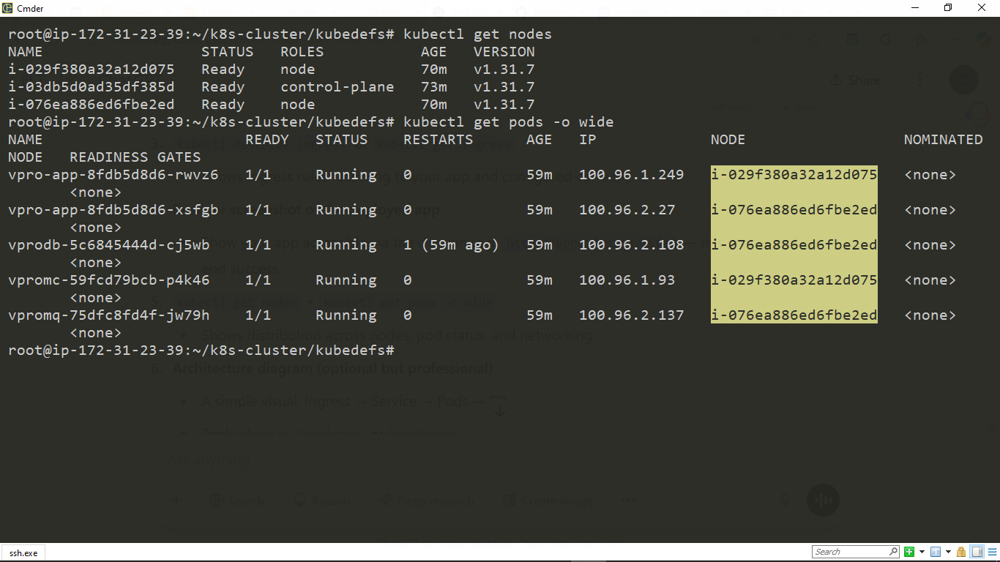
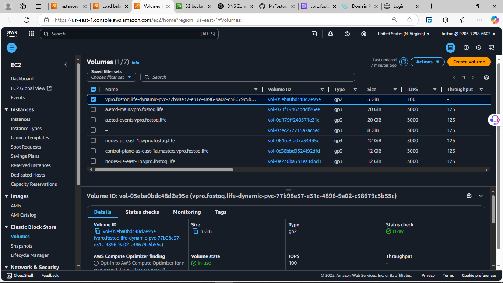
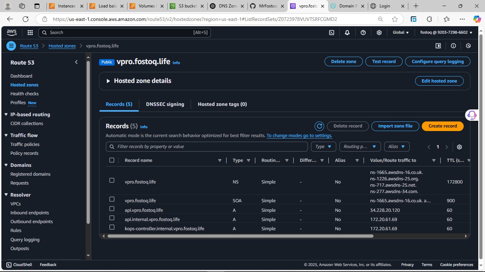
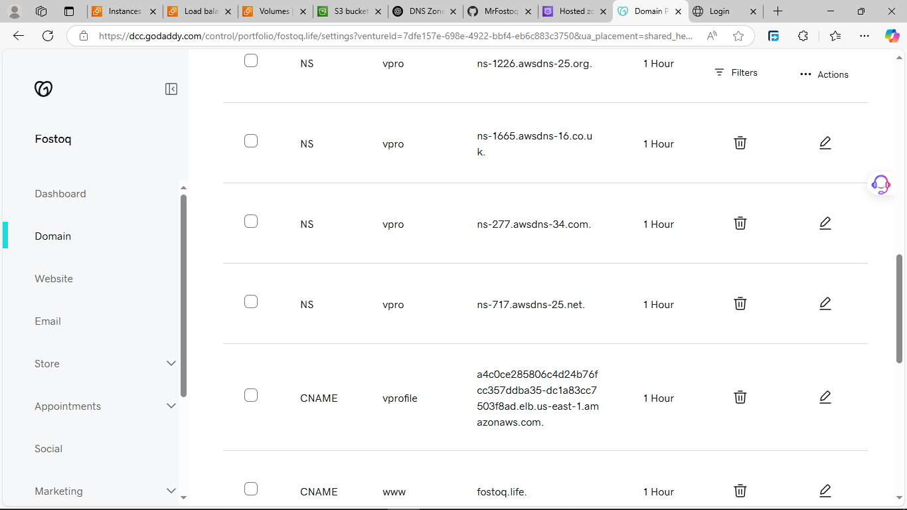
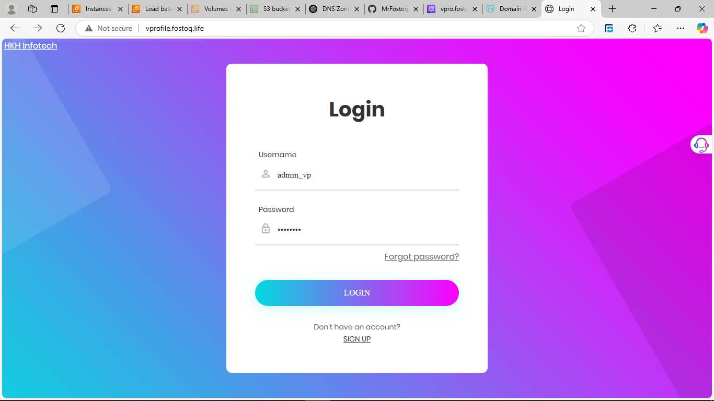
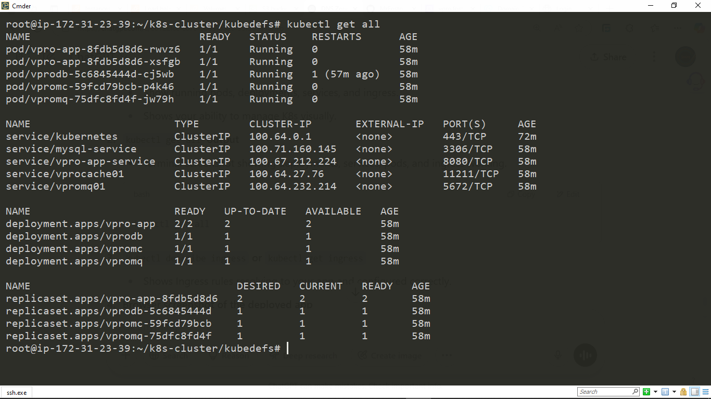
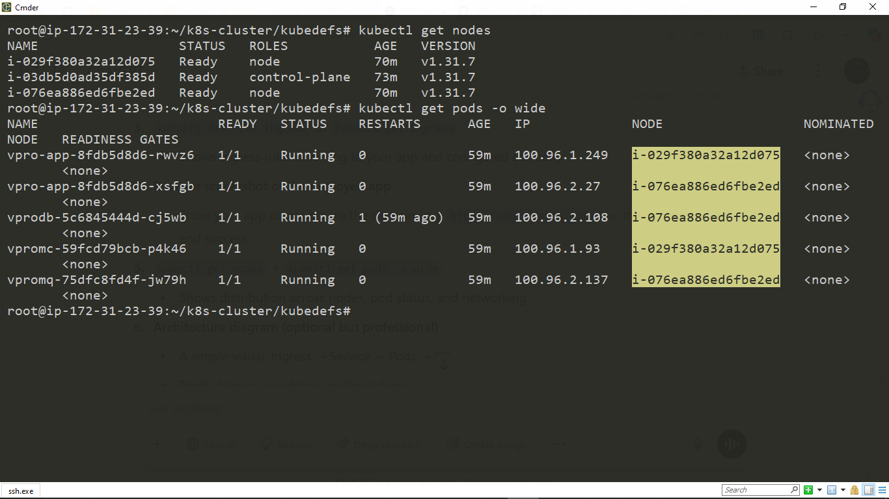
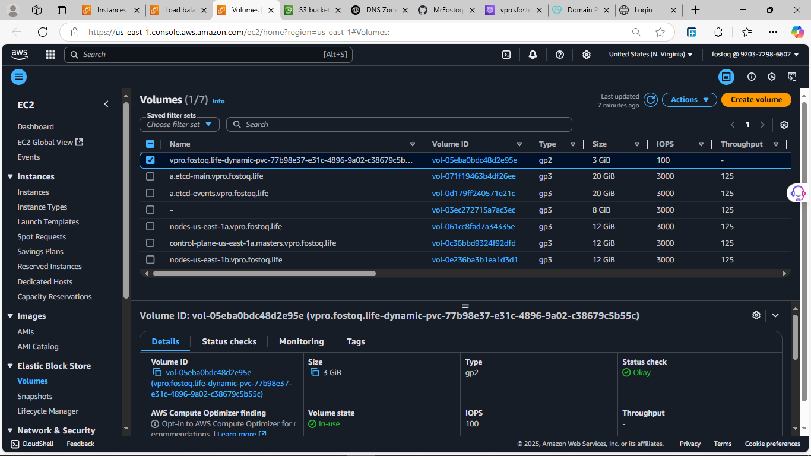
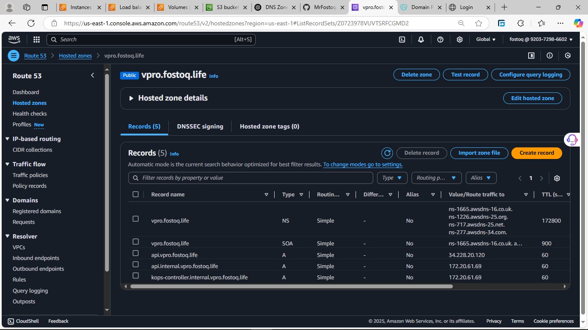
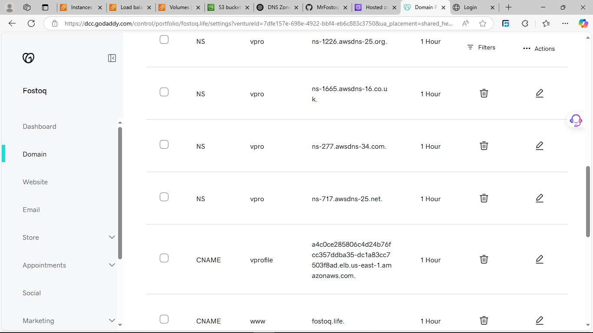